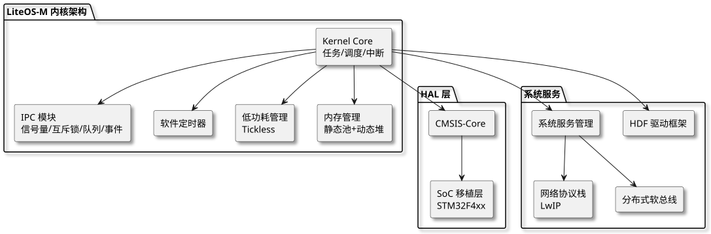
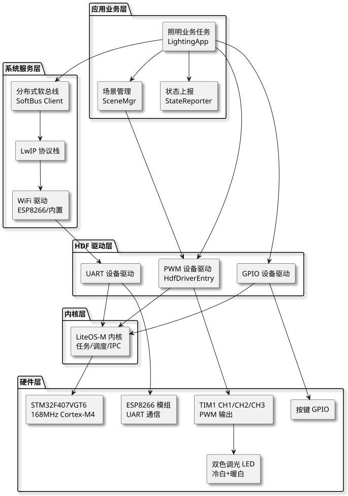
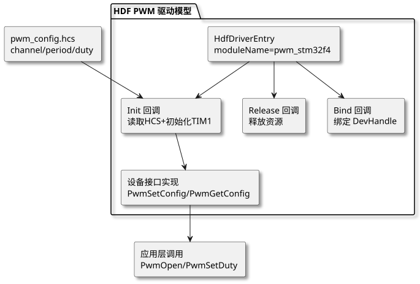

第 40 章 OpenHarmony 智能照明（STM32F407+LiteOS-M）
学习目标
- 理解 OpenHarmony LiteOS-M 内核的体系结构及其在 MCU 级设备上的优势
- 掌握 HDF（Hardware Driver Foundation）驱动框架的工作原理与开发流程
- 学会基于 STM32F407 的 PWM 调光硬件电路设计与双色温 LED 控制
- 能使用 arm-none-eabi-gcc + hb build 工具链完成 OpenHarmony 工程的编译与烧录
- 理解软总线与 WiFi 模组在物联网照明场景中的应用模式
- 能独立完成一个支持色温与亮度调节的智能照明节点的设计、编码与调试
§40.1 项目需求分析
§40.1.1 行业背景
智慧建筑是物联网应用的重要落地场景，其中智能照明系统是智慧建筑能耗管理与用户体验提升的关键环节。传统照明系统存在以下问题：调光方式单一（仅支持开关或固定档位）、无法远程控制、色温不可调、能耗管理粗放。基于 OpenHarmony 的智能照明系统借助鸿蒙分布式软总线能力，可实现多设备协同、跨设备控制与场景联动，是当前智慧照明领域的研究热点。
本项目以 STM32F407（拓维 Niobe407 开发板）作为主控芯片，运行 OpenHarmony LiteOS-M 内核，通过 HDF 驱动框架将 PWM 外设抽象为标准设备节点，向上层应用提供统一的调光接口，并通过 WiFi 模组接入 OpenHarmony 软总线，接收手机 APP 或其他鸿蒙设备的控制指令，实现色温调节、亮度调节、场景模式切换等功能。
§40.1.2 功能需求
智能照明节点需满足以下功能需求：
- PWM 调光：使用 TIM1 的 CH1/CH2/CH3 三路 PWM 输出，分别驱动冷白、暖白、（可选）彩光 LED，PWM 频率 ≥ 1 kHz 以避免可视闪烁，分辨率 ≥ 10 bit（0~1023）。
- 色温调节：通过调整冷白与暖白两路 PWM 占空比的比值，实现色温在 2700 K（暖白）至 6500 K（冷白）范围内的连续调节。
- 亮度调节：在保持色温不变的前提下，同步缩放两路 PWM 占空比，实现 1%~100% 范围的亮度调节，并采用对数曲线补偿人眼亮度感知的非线性。
- 远程控制：通过 WiFi 模组接入家庭路由，订阅 OpenHarmony 软总线上的控制消息，接收手机 APP 下发的色温/亮度/场景指令。
- 场景模式：内置至少 4 种场景模式（阅读、观影、助眠、起夜），每种模式对应一组预设的色温与亮度参数。
- 状态上报：周期性向软总线上报当前色温、亮度、累计亮灯时长等状态数据，供 APP 显示与能耗统计。
- 本地按键：保留一个物理按键，支持短按切换场景、长按开关灯，作为网络异常时的兜底控制手段。
§40.1.3 性能指标
| 指标项 | 目标值 | 说明 |
|---|---|---|
| PWM 频率 | 1 kHz ~ 5 kHz | 避免低频闪烁，降低 EMI |
| PWM 分辨率 | ≥ 10 bit | 0~1023 共 1024 级 |
| 色温调节范围 | 2700 K ~ 6500 K | 覆盖暖白到冷白常用范围 |
| 亮度调节范围 | 1% ~ 100% | 对数曲线补偿人眼感知 |
| 指令响应延迟 | < 200 ms | 从 APP 下发到灯效变化 |
| 状态上报周期 | 5 s | 平衡实时性与功耗 |
| 本地按键响应 | < 50 ms | 短按检测窗口 20 ms 消抖 |
| 系统功耗 | < 50 mA（待机） | 不含 LED 负载 |
§40.1.4 应用场景
本项目的智能照明节点可应用于以下典型场景：
- 家庭客厅：通过手机 APP 或语音助手调节客厅主灯的色温与亮度，配合电视观看、阅读、聚会等不同场景。
- 卧室：实现"助眠模式"——在睡前 30 分钟内逐渐降低色温与亮度，模拟日落，帮助人体分泌褪黑素。
- 办公室：根据自然光照强度与时间自动调节照明色温，缓解视觉疲劳，提升工作效率。
- 走廊与楼梯间：结合人体感应传感器，实现"人来灯亮、人走灯灭"的节能控制。
brightness_pwm = pow(target, 2.2) * 1023）可获得更均匀的视觉体验。
§40.2 OpenHarmony LiteOS-M 与 HDF 框架介绍
§40.2.1 LiteOS-M 内核架构
§40.2.1.1 内核选型与特点
OpenHarmony 针对不同设备算力提供了三种内核：Linux Kernel（标准系统，ARM Cortex-A）、LiteOS-A（小型系统，带 MMU 的 Cortex-A）、LiteOS-M（Mini 系统，MCU 级 Cortex-M）。本项目使用的 STM32F407 为 Cortex-M4 内核，无 MMU，因此选用 LiteOS-M 内核。
LiteOS-M 是华为开源的轻量级实时操作系统内核，专为 MCU 级设备设计，具有以下特点：
- 极小体积：内核代码体积 < 10 KB，RAM 占用 < 1 KB（最小配置）。
- 多任务调度：支持抢占式优先级调度，最多 32 个优先级，任务切换开销 < 1 μs。
- 丰富 IPC 机制：提供信号量、互斥锁、消息队列、事件标志、软件定时器等。
- 低功耗管理：支持 Tickless 低功耗模式，在空闲时自动进入休眠，由外部事件唤醒。
- CMSIS-RTOS2 兼容：提供标准 CMSIS-RTOS2 API 接口，便于移植现有 ARM 生态代码。
§40.2.1.2 架构组成

查看 PlantUML 源码
@startuml
skinparam defaultFontName "Microsoft YaHei"
skinparam backgroundColor #ffffff
skinparam componentStyle rectangle
skinparam shadowing true
top to bottom direction
package "LiteOS-M 内核架构" {
component "Kernel Core\n任务/调度/中断" as K
component "IPC 模块\n信号量/互斥锁/队列/事件" as IPC
component "软件定时器" as TMR
component "低功耗管理\nTickless" as PWR
component "内存管理\n静态池+动态堆" as MEM
}
package "HAL 层" {
component "CMSIS-Core" as CMSIS
component "SoC 移植层\nSTM32F4xx" as SOC
}
package "系统服务" {
component "HDF 驱动框架" as HDF
component "系统服务管理" as SAMGR
component "网络协议栈\nLwIP" as NWK
component "分布式软总线" as DT
}
K --> IPC
K --> TMR
K --> PWR
K --> MEM
K --> CMSIS
CMSIS --> SOC
K --> HDF
K --> SAMGR
SAMGR --> NWK
SAMGR --> DT
@enduml§40.2.2 HDF 驱动框架
§40.2.2.1 框架概述与核心概念
HDF（Hardware Driver Foundation）是 OpenHarmony 提供的统一驱动框架，目标是"一次开发，多端部署"。HDF 通过设备配置描述（HCS，HDF Configuration Source）将硬件参数与驱动代码解耦，通过驱动模型（Driver Model）规范驱动接口，使同一份驱动代码可在不同芯片上复用。
HDF 的核心概念包括：
- Device：逻辑设备，如 PWM 设备、GPIO 设备、I2C 设备等，每个设备有唯一的设备名与服务名。
- Driver：驱动程序，实现
HdfDriverEntry结构体中的Bind、Init、Release三个回调函数。 - Device Manager：设备管理器，负责根据 HCS 配置加载驱动、创建设备节点、分发设备访问请求。
- Device Service：设备服务，向应用层暴露统一的设备访问 API（如
PwmOpen、PwmSetDuty）。 - HCS 配置：使用类 JSON 语法的配置文件描述硬件拓扑与参数，编译时由 hc-gen 工具转为 C 数组编入固件。
§40.2.2.2 驱动加载与访问流程
查看 PlantUML 源码
@startuml
skinparam defaultFontName "Microsoft YaHei"
skinparam backgroundColor #ffffff
skinparam componentStyle rectangle
skinparam shadowing true
left to right direction
component "HCS 配置文件\npwm_config.hcs" as HCS
component "hc-gen 工具" as HC
component "hcb 编译产物\n嵌入固件" as HCB
component "Device Manager" as DM
component "HdfDriverEntry\nBind/Init/Release" as DE
component "Device Service\nPwmOpen/SetDuty" as SVC
component "应用层\n调光业务" as APP
HCS --> HC
HC --> HCB
HCB --> DM
DM --> DE
DE --> SVC
SVC --> APP
@enduml§40.2.3 与 Linux 鸿蒙的差异
OpenHarmony 标准系统（基于 Linux Kernel）与 Mini 系统（基于 LiteOS-M）在驱动模型上存在显著差异，理解这些差异有助于在 MCU 平台上正确开发驱动：
| 对比项 | 标准系统（Linux） | Mini 系统（LiteOS-M） |
|---|---|---|
| 内核 | Linux Kernel 5.10 | LiteOS-M（CMSIS-RTOS2） |
| 用户态/内核态 | 分离（用户态驱动支持） | 统一地址空间，无分离 |
| 驱动加载 | 支持动态加载 .ko | 静态编译进固件 |
| 设备节点 | /dev/pwmX（VFS 节点） | 通过 DevHandle 句柄访问 |
| 配置工具 | hc-gen + Device Profile | hc-gen（精简版） |
| IPC 通信 | RPC + Binder | 函数直接调用或消息队列 |
| 典型 RAM 占用 | ≥ 128 MB | ≥ 128 KB |
§40.3 系统架构设计
本项目采用分层架构，从下到上依次为硬件层、内核层、HDF 驱动层、系统服务层、应用业务层。各层职责清晰，通过标准接口解耦，便于后续扩展与移植。

查看 PlantUML 源码
@startuml
skinparam defaultFontName "Microsoft YaHei"
skinparam backgroundColor #ffffff
skinparam componentStyle rectangle
skinparam shadowing true
top to bottom direction
package "应用业务层" {
component "照明业务任务\nLightingApp" as APP
component "场景管理\nSceneMgr" as SCENE
component "状态上报\nStateReporter" as REPORT
}
package "系统服务层" {
component "分布式软总线\nSoftBus Client" as SOFTBUS
component "WiFi 驱动\nESP8266/内置" as WIFI
component "LwIP 协议栈" as NET
}
package "HDF 驱动层" {
component "PWM 设备驱动\nHdfDriverEntry" as PWM
component "GPIO 设备驱动" as GPIO
component "UART 设备驱动" as UART
}
package "内核层" {
component "LiteOS-M 内核\n任务/调度/IPC" as LOS
}
package "硬件层" {
component "STM32F407VGT6\n168MHz Cortex-M4" as MCU
component "TIM1 CH1/CH2/CH3\nPWM 输出" as TIM1
component "按键 GPIO" as KEY0
component "ESP8266 模组\nUART 通信" as ESP
component "双色调光 LED\n冷白+暖白" as LED
}
APP --> SCENE
APP --> REPORT
APP --> SOFTBUS
SOFTBUS --> NET
NET --> WIFI
WIFI --> UART
APP --> PWM
SCENE --> PWM
PWM --> TIM1
TIM1 --> LED
APP --> GPIO
GPIO --> KEY0
UART --> ESP
PWM --> LOS
GPIO --> LOS
UART --> LOS
LOS --> MCU
@enduml系统的数据流分为两条主链路：
- 下行控制链路：手机 APP 下发指令 → WiFi 模组接收 → UART 送达软总线 → 照明业务任务解析 → 调用
PwmSetDuty接口 → HDF PWM 驱动写入 TIM1 CCR 寄存器 → LED 灯效变化。 - 上行状态链路：照明业务任务周期采集当前色温/亮度 → 通过软总线发布状态消息 → WiFi 模组转发至路由器 → 手机 APP 显示。
§40.4 硬件设计
§40.4.1 元器件清单（BOM）
| 编号 | 元器件 | 型号/规格 | 数量 | 说明 |
|---|---|---|---|---|
| U1 | 主控 MCU | STM32F407VGT6 / 拓维 Niobe407 | 1 | Cortex-M4，168 MHz，1 MB Flash，192 KB RAM |
| U2 | WiFi 模组 | ESP8266 ESP-01S | 1 | AT 指令模式，3.3V 供电，可选 |
| Q1, Q2 | MOS 管 | AO3400 N-MOS | 2 | Vds=30V, Id=5A, 低导通电阻 |
| D1 | 冷白 LED 灯珠 | 5050 6500K 0.5W | 3 | 正向电压 3.0V，电流 150mA |
| D2 | 暖白 LED 灯珠 | 5050 2700K 0.5W | 3 | 正向电压 3.0V，电流 150mA |
| R1, R2 | 限流电阻 | 22Ω 1/4W | 2 | 每路 LED 限流 |
| R3, R4 | 栅极电阻 | 100Ω | 2 | MOS 栅极驱动限流 |
| R5, R6 | 下拉电阻 | 10kΩ | 2 | MOS 栅极下拉，确保上电关断 |
| SW1 | 本地按键 | 6x6 轻触按键 | 1 | 短按切场景，长按开关灯 |
| U3 | 电源模块 | LM2596 DC-DC | 1 | 12V 转 5V，3A 输出 |
| U4 | LDO | AMS1117-3.3 | 1 | 5V 转 3.3V 给 MCU |
| P1 | 电源接口 | DC5521 | 1 | 12V 2A 适配器输入 |
§40.4.2 接线表
| MCU 引脚 | 外设 | 连接说明 |
|---|---|---|
| PA8 (TIM1_CH1) | Q1 栅极（经 R3） | 冷白 LED PWM 调光 |
| PA9 (TIM1_CH2) | Q2 栅极（经 R4） | 暖白 LED PWM 调光 |
| PA10 (TIM1_CH3) | 预留（彩光 LED） | 本项目未使用，可扩展 |
| PC13 | SW1 按键 | 按下接 GND，启用内部上拉 |
| PA2 (USART2_TX) | ESP8266 RX | WiFi 模组通信 |
| PA3 (USART2_RX) | ESP8266 TX | WiFi 模组通信 |
| PA9 (备用 USART1) | 调试串口 TX | 注意与 TIM1_CH2 复用冲突，调试时改用 PB6 |
| 5V | U3 输出 | 给 LED 灯珠供电（经限流电阻） |
| 3.3V | U4 输出 | 给 MCU 与 ESP8266 供电 |
| GND | 共地 | 所有模块地共连 |
HAL_TIM_PWM_Start() 时需使用 TIM_CHANNEL_x 参数；若使用裸寄存器编程，需在配置 CCER 寄存器时同时置位 CCxE 与 CCxNE（如需互补输出），并置位 BDTR 的 MOE 位。
§40.5 软件架构与关键代码
§40.5.1 HDF 驱动模型实现
本项目为 STM32F407 的 TIM1 PWM 外设编写一个 HDF 驱动，遵循 OpenHarmony HDF 规范。驱动文件位于 drivers/adapter/platform/pwm/pwm_stm32f4.c，配置文件位于 drivers/adapter/platform/pwm/pwm_config.hcs。

查看 PlantUML 源码
@startuml
skinparam defaultFontName "Microsoft YaHei"
skinparam backgroundColor #ffffff
skinparam componentStyle rectangle
skinparam shadowing true
top to bottom direction
package "HDF PWM 驱动模型" {
component "HdfDriverEntry\nmoduleName=pwm_stm32f4" as ENTRY
component "Bind 回调\n绑定 DevHandle" as BIND
component "Init 回调\n读取HCS+初始化TIM1" as INIT
component "Release 回调\n释放资源" as REL
component "设备接口实现\nPwmSetConfig/PwmGetConfig" as IFACE
}
component "pwm_config.hcs\nchannel/period/duty" as HCS2
component "应用层调用\nPwmOpen/PwmSetDuty" as APP2
ENTRY --> BIND
ENTRY --> INIT
ENTRY --> REL
INIT --> IFACE
HCS2 --> INIT
IFACE --> APP2
@enduml§40.5.2 HCS 配置文件
首先编写 HCS 配置文件，描述 PWM 设备的硬件参数。HCS 使用类 JSON 语法，但去掉了引号，便于 hc-gen 工具解析。
// file: drivers/adapter/platform/pwm/pwm_config.hcs
root {
platform {
pwm_config {
template pwm_device {
serviceName = "";
channel = 0;
period = 1000; // 默认周期 1ms (1kHz)
duty = 0; // 默认占空比 0
polarity = 0; // 0: 正极性, 1: 负极性
deviceName = "PWM";
}
device_pwm_1 :: pwm_device {
serviceName = "HDF_PLATFORM_PWM_1";
channel = 1; // TIM1 CH1 = 冷白
deviceName = "PWM1";
}
device_pwm_2 :: pwm_device {
serviceName = "HDF_PLATFORM_PWM_2";
channel = 2; // TIM1 CH2 = 暖白
deviceName = "PWM2";
}
}
}
}
§40.5.3 HDF PWM 驱动核心代码
下面给出完整的 HDF PWM 驱动实现。驱动通过 HdfDriverEntry 注册，Init 回调中读取 HCS 配置并初始化 STM32F407 的 TIM1 外设，Dispatch 回调中处理来自应用层的命令。
// file: drivers/adapter/platform/pwm/pwm_stm32f4.c
#include "hdf_device_desc.h"
#include "hdf_base.h"
#include "hdf_log.h"
#include "pwm_if.h"
#include "stm32f4xx_hal.h"
#define HDF_LOG_TAG pwm_stm32f4
/* 设备私有数据结构 */
typedef struct {
uint8_t channel; // 通道号 1/2/3
uint32_t period; // PWM 周期 (us)
uint32_t duty; // 占空比 (0~period)
TIM_HandleTypeDef htim;
TIM_TypeDef *instance;
uint32_t channelHal; // HAL 通道宏
} PwmStm32f4Device;
/* TIM1 通道映射 */
static TIM_TypeDef *const g_timInstance = TIM1;
static const uint32_t g_channelMap[4] = {
0,
TIM_CHANNEL_1,
TIM_CHANNEL_2,
TIM_CHANNEL_3,
};
/* 初始化 TIM1 为 PWM 输出 */
static int32_t PwmStm32f4HwInit(PwmStm32f4Device *dev)
{
GPIO_InitTypeDef gpioInit = {0};
TIM_OC_InitTypeDef ocConfig = {0};
/* 1. 使能时钟 */
__HAL_RCC_TIM1_CLK_ENABLE();
__HAL_RCC_GPIOA_CLK_ENABLE();
/* 2. 配置 GPIO 为复用推挽输出 */
gpioInit.Pin = (dev->channel == 1) ? GPIO_PIN_8 :
(dev->channel == 2) ? GPIO_PIN_9 : GPIO_PIN_10;
gpioInit.Mode = GPIO_MODE_AF_PP;
gpioInit.Pull = GPIO_NOPULL;
gpioInit.Speed = GPIO_SPEED_FREQ_HIGH;
gpioInit.Alternate = GPIO_AF1_TIM1;
HAL_GPIO_Init(GPIOA, &gpioInit);
/* 3. 配置 TIM1 时基 */
dev->htim.Instance = g_timInstance;
dev->htim.Init.Prescaler = 168 - 1; // 168MHz/168 = 1MHz 计数频率
dev->htim.Init.CounterMode = TIM_COUNTERMODE_UP;
dev->htim.Init.Period = dev->period - 1; // 1MHz/1000 = 1kHz
dev->htim.Init.ClockDivision = TIM_CLOCKDIVISION_DIV1;
dev->htim.Init.RepetitionCounter = 0;
dev->htim.Init.AutoReloadPreload = TIM_AUTORELOAD_PRELOAD_ENABLE;
if (HAL_TIM_PWM_Init(&dev->htim) != HAL_OK) {
HDF_LOGE("HAL_TIM_PWM_Init failed");
return HDF_FAILURE;
}
/* 4. 配置 OC 通道为 PWM 模式 1 */
ocConfig.OCMode = TIM_OCMODE_PWM1;
ocConfig.Pulse = dev->duty;
ocConfig.OCPolarity = TIM_OCPOLARITY_HIGH;
ocConfig.OCNPolarity = TIM_OCNPOLARITY_HIGH;
ocConfig.OCFastMode = TIM_OCFAST_DISABLE;
ocConfig.OCIdleState = TIM_OCIDLESTATE_RESET;
ocConfig.OCNIdleState = TIM_OCNIDLESTATE_RESET;
if (HAL_TIM_PWM_ConfigChannel(&dev->htim, &ocConfig, dev->channelHal) != HAL_OK) {
HDF_LOGE("HAL_TIM_PWM_ConfigChannel failed");
return HDF_FAILURE;
}
/* 5. 启动 PWM 输出（高级定时器需使能 MOE） */
HAL_TIM_PWM_Start(&dev->htim, dev->channelHal);
__HAL_TIM_MOE_ENABLE(&dev->htim);
return HDF_SUCCESS;
}
/* Dispatch：处理应用层下发命令 */
static int32_t PwmStm32f4Dispatch(struct HdfDeviceIoClient *client,
int cmd, struct HdfSBuf *data, struct HdfSBuf *reply)
{
PwmStm32f4Device *dev = (PwmStm32f4Device *)client->device->priv;
switch (cmd) {
case PWM_CMD_SET_CONFIG: {
uint32_t duty;
if (HdfSbufReadUint32(data, &duty) == false) {
return HDF_ERR_INVALID_PARAM;
}
dev->duty = duty;
__HAL_TIM_SET_COMPARE(&dev->htim, dev->channelHal, duty);
return HDF_SUCCESS;
}
case PWM_CMD_GET_CONFIG: {
HdfSbufWriteUint32(reply, dev->duty);
return HDF_SUCCESS;
}
default:
return HDF_ERR_NOT_SUPPORT;
}
}
/* Bind 回调：绑定设备服务 */
static int32_t PwmStm32f4Bind(struct HdfDeviceObject *device)
{
if (device == NULL) {
return HDF_ERR_INVALID_PARAM;
}
static struct IDeviceIoService pwmService = {
.Dispatch = PwmStm32f4Dispatch,
};
device->service = &pwmService;
return HDF_SUCCESS;
}
/* Init 回调：读取 HCS 并初始化硬件 */
static int32_t PwmStm32f4Init(struct HdfDeviceObject *device)
{
if (device == NULL || device->property == NULL) {
return HDF_ERR_INVALID_PARAM;
}
PwmStm32f4Device *dev = (PwmStm32f4Device *)OsalMemCalloc(sizeof(PwmStm32f4Device));
if (dev == NULL) {
return HDF_ERR_MALLOC_FAIL;
}
/* 读取 HCS 配置 */
if (HdfDeviceObjectGetServiceName(device, &dev->channel) != HDF_SUCCESS) {
HDF_LOGE("read channel failed");
OsalMemFree(dev);
return HDF_FAILURE;
}
dev->period = 1000; // 1ms 周期
dev->duty = 0;
dev->instance = g_timInstance;
dev->channelHal = g_channelMap[dev->channel];
device->priv = dev;
int32_t ret = PwmStm32f4HwInit(dev);
if (ret != HDF_SUCCESS) {
HDF_LOGE("PwmStm32f4HwInit failed: %d", ret);
OsalMemFree(dev);
return ret;
}
HDF_LOGI("PwmStm32f4Init ok, channel=%u", dev->channel);
return HDF_SUCCESS;
}
/* Release 回调：释放资源 */
static void PwmStm32f4Release(struct HdfDeviceObject *device)
{
if (device == NULL || device->priv == NULL) {
return;
}
PwmStm32f4Device *dev = (PwmStm32f4Device *)device->priv;
HAL_TIM_PWM_Stop(&dev->htim, dev->channelHal);
OsalMemFree(dev);
device->priv = NULL;
}
/* HdfDriverEntry 注册结构体 */
struct HdfDriverEntry g_pwmStm32f4Entry = {
.moduleVersion = 1,
.moduleName = "pwm_stm32f4",
.Bind = PwmStm32f4Bind,
.Init = PwmStm32f4Init,
.Release = PwmStm32f4Release,
};
HDF_INIT(g_pwmStm32f4Entry);
§40.5.4 应用层调光接口
应用层通过 HDF 提供的 PwmOpen、PwmSetDuty 等标准接口访问 PWM 设备。下面给出照明业务的核心代码，包含色温调节、亮度调节、场景管理三个模块。
// file: applications/sample/wifi-iot/app/lighting_app.c
#include "pwm_if.h"
#include "cmsis_os2.h"
#include "los_task.h"
#include "ohos_init.h"
#include "softbus_bus_center.h"
#include "lighting_app.h"
#define PWM_PERIOD 1000 // PWM 周期 1000 计数（1kHz, 1MHz 计数频率）
#define PWM_DUTY_MAX 1000 // 占空比最大值
#define GAMMA 2.2f // 人眼亮度感知 gamma 校正系数
/* 场景模式定义 */
typedef struct {
uint16_t colorTemp; // 色温 K
uint8_t brightness; // 亮度 %
} SceneMode;
static const SceneMode g_scenes[] = {
{6500, 100}, // 阅读：冷白满亮
{3000, 30}, // 观影：暖白低亮
{2700, 10}, // 助眠：极暖极低
{4000, 50}, // 起夜：中性中亮
};
#define SCENE_COUNT (sizeof(g_scenes) / sizeof(g_scenes[0]))
static DevHandle g_pwmCool = NULL; // 冷白 PWM 句柄
static DevHandle g_pwmWarm = NULL; // 暖白 PWM 句柄
static uint8_t g_curScene = 0;
static uint8_t g_brightness = 100;
static uint16_t g_colorTemp = 6500;
/* gamma 校正：将 0~100 亮度映射到 0~1000 占空比 */
static uint32_t ApplyGamma(uint8_t brightness)
{
float normalized = brightness / 100.0f;
float corrected = powf(normalized, GAMMA);
return (uint32_t)(corrected * PWM_DUTY_MAX);
}
/* 根据色温计算冷白/暖白占空比比例
* 2700K -> 全暖白
* 6500K -> 全冷白
* 中间值线性插值
*/
static void CalcColorMix(uint16_t colorTemp, uint8_t brightness,
uint32_t *coolDuty, uint32_t *warmDuty)
{
float ratio;
if (colorTemp <= 2700) {
ratio = 0.0f; // 全暖白
} else if (colorTemp >= 6500) {
ratio = 1.0f; // 全冷白
} else {
ratio = (float)(colorTemp - 2700) / (6500 - 2700);
}
uint32_t totalDuty = ApplyGamma(brightness);
*coolDuty = (uint32_t)(totalDuty * ratio);
*warmDuty = (uint32_t)(totalDuty * (1.0f - ratio));
}
/* 设置色温 */
int32_t LightingSetColorTemperature(uint16_t colorTemp)
{
if (colorTemp < 2700 || colorTemp > 6500) {
return HDF_ERR_INVALID_PARAM;
}
g_colorTemp = colorTemp;
uint32_t coolDuty, warmDuty;
CalcColorMix(colorTemp, g_brightness, &coolDuty, &warmDuty);
PwmSetDuty(g_pwmCool, coolDuty);
PwmSetDuty(g_pwmWarm, warmDuty);
return HDF_SUCCESS;
}
/* 设置亮度 */
int32_t LightingSetBrightness(uint8_t brightness)
{
if (brightness > 100) brightness = 100;
g_brightness = brightness;
uint32_t coolDuty, warmDuty;
CalcColorMix(g_colorTemp, brightness, &coolDuty, &warmDuty);
PwmSetDuty(g_pwmCool, coolDuty);
PwmSetDuty(g_pwmWarm, warmDuty);
return HDF_SUCCESS;
}
/* 切换场景模式 */
int32_t LightingSwitchScene(uint8_t sceneId)
{
if (sceneId >= SCENE_COUNT) {
return HDF_ERR_INVALID_PARAM;
}
g_curScene = sceneId;
g_colorTemp = g_scenes[sceneId].colorTemp;
g_brightness = g_scenes[sceneId].brightness;
return LightingSetColorTemperature(g_colorTemp);
}
/* 照明业务主任务 */
static void *LightingTask(void *arg)
{
(void)arg;
/* 打开两个 PWM 设备 */
g_pwmCool = PwmOpen(1); // channel 1 = 冷白
g_pwmWarm = PwmOpen(2); // channel 2 = 暖白
if (g_pwmCool == NULL || g_pwmWarm == NULL) {
printf("PwmOpen failed\n");
return NULL;
}
/* 初始为阅读场景 */
LightingSwitchScene(0);
/* 主循环：等待软总线消息或本地按键事件 */
while (1) {
osDelay(100); // 100ms 心跳
/* TODO: 从软总线消息队列读取控制指令并分发 */
}
return NULL;
}
/* 应用入口：通过 SYS_RUN 宏注册到系统启动流程 */
static void LightingAppInit(void)
{
osThreadAttr_t attr = {0};
attr.name = "LightingTask";
attr.stack_size = 1024 * 4;
attr.priority = osPriorityNormal;
if (osThreadNew((osThreadFunc_t)LightingTask, NULL, &attr) == NULL) {
printf("Failed to create LightingTask\n");
}
}
SYS_RUN(LightingAppInit);
§40.5.5 LiteOS-M 任务调度设计
§40.5.5.1 任务划分
本系统共创建 4 个任务，优先级从高到低依次为：
| 任务名 | 优先级 | 栈大小 | 功能 |
|---|---|---|---|
| KeyTask | osPriorityAboveNormal (25) | 512 字 | 本地按键扫描与消抖，长按检测 |
| SoftBusTask | osPriorityNormal (24) | 2048 字 | 软总线消息接收与解析 |
| LightingTask | osPriorityNormal (24) | 4096 字 | 照明业务逻辑、调光接口调用 |
| ReporterTask | osPriorityBelowNormal (23) | 1024 字 | 周期性上报状态到软总线 |
§40.5.5.2 任务间通信
任务间通过消息队列（LOS_QueueCreate）传递控制指令，按键任务与软总线任务向照明任务发送消息，照明任务处理后通过事件标志（LOS_EventWrite）通知上报任务。这种设计避免了共享变量的竞态条件，符合 RTOS 编程的最佳实践。
§40.6 工程构建与烧录
§40.6.1 工具链准备
本项目使用以下工具链：
- 编译器：arm-none-eabi-gcc 10.3 或更高版本
- 构建工具：hb（HarmonyOS Build）+ GN + Ninja
- 烧录工具：OpenOCD 或 ST-Link Utility
- OpenHarmony 源码：4.0 Release 分支，从 gitee.com/openharmony 拉取
- 开发板 SDK：拓维 Niobe407 适配包，位于
vendor/niobe/
§40.6.2 编译流程
§40.6.2.1 编译步骤
OpenHarmony 工程使用 hb 命令进行编译，典型流程如下：
# 1. 进入 OpenHarmony 源码根目录
cd ~/openharmony
# 2. 安装 hb 工具（首次编译需要）
pip3 install build/lite
# 3. 设置环境变量
export PATH=$PATH:~/openharmony/prebuilts/gcc/linux-x86/arm/gcc-arm-none-eabi-10.3-2021.10/bin
# 4. 选择产品配置（拓维 Niobe407）
hb set
# 在弹出的菜单中选择 "niobe407_liteos_m"
# 5. 执行编译
hb build -f
# 6. 编译产物位于 out/niobe407_liteos_m/
# - OHOS_Image 内核+系统镜像
# - OHOS_Image.hex 用于烧录的 HEX 文件
# - rootfs 文件系统镜像（Mini 系统通常为空）
§40.6.2.2 编译输出
编译成功后，控制台会输出类似以下信息：
[OHOS INFO] pwm_stm32f4.o
[OHOS INFO] lighting_app.o
[OHOS INFO] lighting_app_init.o
[OHOS INFO] niobe407_liteos_m build success!
[OHOS INFO] Cost time: 0:00:42
§40.6.3 烧录步骤
使用 ST-Link V2 烧录，步骤如下：
- 将 ST-Link 通过 SWD 接口连接到 Niobe407 开发板（SWDIO、SWCLK、GND、3.3V）。
- 打开 OpenOCD 配置文件
interface/stlink.cfg与target/stm32f4x.cfg。 - 执行烧录命令：
openocd -f interface/stlink.cfg -f target/stm32f4x.cfg -c "program out/niobe407_liteos_m/OHOS_Image.hex verify reset exit" - 烧录完成后，开发板自动复位，可通过串口（USART1，115200 波特率）查看启动日志。
hb build --gn-args=use_mdk=true），但官方推荐使用 hb + Ninja 命令行编译以获得最佳兼容性。
§40.6.4 调试技巧
开发过程中的常用调试手段：
- 串口日志：通过
HDF_LOGI、printf输出调试信息，在 USART1 观察。注意 LiteOS-M 默认日志级别为 INFO，可通过hilog_tool命令动态调整。 - GDB 调试：使用
arm-none-eabi-gdb配合 OpenOCD 进行断点调试，可单步跟踪 HDF 驱动的 Init/Bind/Dispatch 回调。 - 逻辑分析仪：在 PA8/PA9 引脚接逻辑分析仪，观察 PWM 波形的占空比与频率，验证驱动配置是否正确。
- HDF 设备列表：在串口控制台输入
hdf_devmgr命令，可列出当前已加载的 HDF 设备及其状态。 - 常见错误：若
PwmOpen返回 NULL，通常是 HCS 配置未正确编译进固件，检查hb build是否包含pwm_config.hcs。
§40.7 扩展方向
§40.7.1 多灯组网与软总线联动
本项目可扩展为多灯组网场景，通过 OpenHarmony 软总线实现多盏灯具的协同控制。每盏灯具作为软总线上的一个节点，发布自己的设备信息（设备名、能力、当前状态），订阅其他灯具的状态变化。典型应用包括：
- 情景同步：客厅主灯调节色温时，餐厅、玄关灯自动同步到相同色温，保持整屋光环境一致。
- 跟随模式：一盏灯的状态变化（如开关、调色）自动复制到其他灯，适合走廊多灯同步控制。
- 分区控制：将灯具划分为不同分区，每分区独立控制，适合大型办公空间的灵活管理。
§40.7.2 人体感应与自适应调光
通过 PIR（被动红外）或 mmWave 毫米波雷达传感器检测人体存在，实现"人来灯亮、人走灯灭"的节能控制。相比传统 PIR，毫米波雷达可检测静止人体（如坐下阅读、睡眠），避免"人在但灯灭"的尴尬。结合环境光传感器（如 BH1750），可在自然光充足时自动降低 LED 亮度，实现恒照度控制。
§40.7.3 自然节律调光
根据时间自动模拟自然光的色温变化，符合人体生物钟节律（Circadian Rhythm）。典型调光曲线如下：
- 06:00—08:00：色温从 2700 K 渐升至 4000 K，亮度从 30% 升至 80%，模拟日出唤醒。
- 08:00—17:00：色温保持 5500~6500 K，亮度 100%，模拟白天工作光照。
- 17:00—21:00：色温从 5500 K 渐降至 3000 K，亮度从 100% 降至 60%，模拟日落放松。
- 21:00—06:00：色温 2700 K，亮度 10% 以下，避免抑制褪黑素分泌。
§40.7.4 语音与多模态交互
通过接入 OpenHarmony AI 框架或外接离线语音识别模块（如 SU-03T），可实现"开灯"、"调亮一点"、"切到观影模式"等语音指令的本地识别，无需依赖云端，保护用户隐私。结合手势识别传感器（如 PAJ7620），还可实现挥手调亮、握拳关灯等手势交互。
§40.7.5 能耗监测与数据上云
通过 INA219 电流传感器采集 LED 实际工作电流，结合 PWM 占空比计算瞬时功率，累计得到能耗数据。通过 MQTT 协议将能耗数据上报至云端服务器，进行长期统计分析与可视化展示，帮助用户优化用电行为。
本章小结
- 本项目以智慧建筑中的智能照明为应用背景，基于 STM32F407 + OpenHarmony LiteOS-M 实现了一个支持色温与亮度调节的智能照明节点。
- LiteOS-M 是专为 MCU 级设备设计的轻量级 RTOS 内核，具有极小体积、抢占式调度、丰富 IPC 机制与低功耗管理能力，是物联网终端的理想内核选择。
- HDF 驱动框架通过 HCS 配置与代码解耦、统一设备接口，实现了"一次开发、多端部署"的目标，是 OpenHarmony 区别于传统 RTOS 的核心优势之一。
- PWM 调光的关键在于硬件电路设计（MOS 管驱动、限流、电源）与软件算法（gamma 校正、色温混光比例），二者结合才能实现视觉舒适的调光效果。
- 系统采用分层架构与多任务设计，应用层通过标准 PwmOpen/PwmSetDuty 接口访问硬件，业务逻辑通过消息队列与事件标志解耦，具备良好的可维护性与可扩展性。
- 扩展方向包括多灯组网、人体感应、自然节律调光、语音交互与能耗监测，体现了 OpenHarmony 在物联网领域的生态优势。
思考题与习题
- 对比 LiteOS-M 与 FreeRTOS 在任务调度、IPC 机制、内存管理三个方面的异同，并说明在 MCU 资源受限场景下 LiteOS-M 的优势。
- 解释 HDF 框架中 HCS 配置文件的作用，并说明将硬件参数从驱动代码中分离的设计优势。请结合本项目的
pwm_config.hcs举例说明。 - 本项目的色温调节通过冷白与暖白两路 PWM 占空比的比值实现。若要支持色温在 2700 K ~ 6500 K 范围内连续可调，且要求色温误差 < 200 K，请设计一种校准方案（提示：使用色温计实测并建立查找表）。
- 人眼对亮度的感知近似遵循 Stevens 幂律，gamma 值约为 2.2。请推导线性占空比与 gamma 校正后占空比的转换公式，并计算目标亮度为 50% 时校正后的 PWM 占空比（PWM 分辨率 0~1000）。
- 设计一个基于消息队列的多任务通信方案，要求：按键任务检测到短按时发送"切换场景"消息，软总线任务收到 APP 指令后发送"设置色温/亮度"消息，照明任务接收消息并执行。画出任务通信时序图并给出关键代码框架。
- 查阅 OpenHarmony 软总线文档，说明设备发现、设备认证、消息传输三个阶段的工作流程，并讨论在 WiFi 网络不稳定时如何保证照明控制指令的可靠性送达。
参考文献
- OpenHarmony 开源项目. OpenHarmony 开发者文档 [EB/OL]. 2024. https://docs.openharmony.cn/
- OpenHarmony 开源项目. LiteOS-M 内核开发指南 [EB/OL]. 2024. https://gitee.com/openharmony/kernel_liteos_m
- OpenHarmony 开源项目. HDF 驱动框架开发指南 [EB/OL]. 2024. https://gitee.com/openharmony/docs/blob/master/zh-cn/device-dev/driver/
- 拓维信息. Niobe407 开发板 OpenHarmony 适配指南 [Z]. 2023. https://gitee.com/openharmony/vendor_talkweb
- STMicroelectronics. STM32F407 Reference Manual RM0090 [Z]. 2023. https://www.st.com/resource/en/reference_manual/dm00031020.pdf
- Zhang Y, Liu J, Yang H. A Lightweight RTOS-Based Smart Lighting System for IoT Applications [C]. IEEE International Conference on Consumer Electronics, 2023: 1-5.
- Chen X, Wang L, Li M. Human-Centric Lighting Control Based on Circadian Rhythm Models [J]. IEEE Transactions on Industrial Electronics, 2024, 71(3): 2891-2901.
- Li H, Zhao Q, Sun Y. A Unified Driver Framework for Heterogeneous IoT Devices in HarmonyOS [J]. IEEE Internet of Things Journal, 2023, 10(15): 13250-13262.